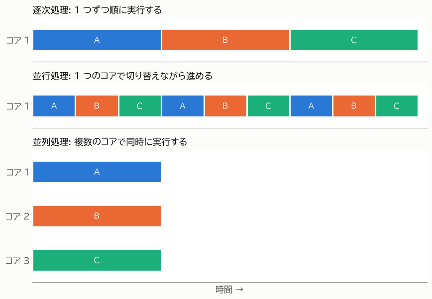
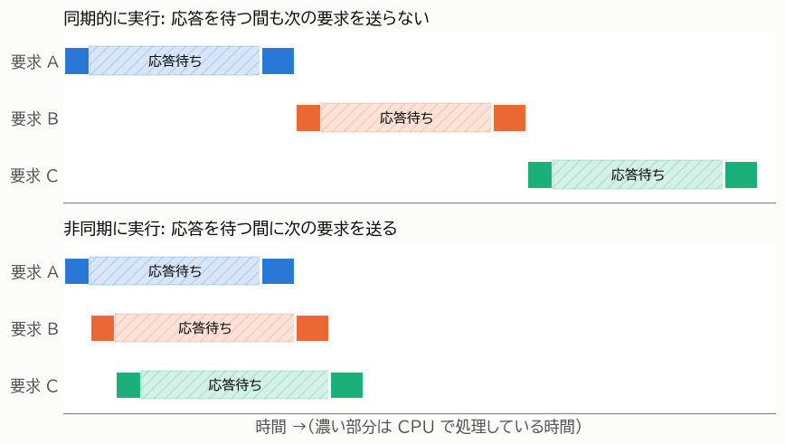

第 2 章 基本概念
この章では、本書全体で使う用語を定義する。「並行」「並列」「非同期」という言葉は、文献や人によって使い方が少しずつ異なる。本書では以下の定義で用語を統一する。
逐次処理・並行処理・並列処理
複数の処理（以下、タスクと呼ぶ）を実行する方法は、大きく次の 3 つに分けられる。
用語 |
意味 |
|---|---|
逐次処理（sequential） |
タスクを 1 つずつ順に実行する。前のタスクが終わるまで、次のタスクは始まらない。 |
並行処理（concurrent） |
複数のタスクを、それぞれが終わるのを待たずに進める。ある時点で実際に実行されているタスクが 1 つだけであっても、切り替えながら進めていれば並行処理である。 |
並列処理（parallel） |
複数のタスクを、複数の CPU コアで物理的に同時に実行する。 |
図 1 に、3 つのタスク A、B、C を実行する様子を示す。


図 1 逐次処理・並行処理・並列処理の比較
並行処理は「複数のタスクを扱う構造」を、並列処理は「複数のタスクを同時に実行する仕組み」を表す言葉である。並列処理は並行処理の一種であり、並行処理であっても並列処理であるとは限らない。たとえば、CPU コアが 1 つしかない計算機でも、OS がタスクを細かく切り替えることで並行処理はできる。しかし、同時に実行されているタスクは常に 1 つなので、並列処理ではない。
ここで重要なのは、並行処理だけでは CPU の計算量は減らないという点である。図 1 の並行処理では、タスクを切り替えているだけで、全体が終わるまでの時間は逐次処理と変わらない（実際には切り替えの手間の分だけ遅くなる）。並行処理で全体の時間が短くなるのは、次に説明する「待ち時間」がある場合である。
同期処理と非同期処理
ある処理を呼び出したとき、その処理が完了するまで呼び出し元が先に進まない方式を 同期処理（synchronous） という。一方、処理の完了を待たずに呼び出し元が先に進み、完了したことを後から受け取る方式を 非同期処理（asynchronous） という。
これと似た用語に、ブロッキングとノンブロッキングがある。
用語 |
意味 |
|---|---|
ブロッキング（blocking） |
処理が完了するまで、呼び出したスレッドが止まる。たとえば |
ノンブロッキング（non-blocking） |
処理がすぐに完了できない場合でも、スレッドを止めずにすぐに戻る。 |
非同期処理は、ノンブロッキングな操作と「完了したら知らせる仕組み」を組み合わせて実現されることが多い。Python の asyncio は、この仕組みを使って 1 つのスレッドの中で多数のタスクを並行に進める（第 8 章 asyncio による非同期処理（基礎） で詳しく説明する）。
本書では、asyncio のように async / await 構文を使って並行に処理を進めることを「非同期処理」と呼ぶ。非同期処理は並行処理を実現する方法の 1 つである。
CPU バウンドと I/O バウンド
並行処理や並列処理を検討するとき、最初に確認すべきことは「その処理の時間は何に使われているか」である。処理は、時間の使われ方によって次の 2 つに分けられる。
分類 |
意味 |
例 |
|---|---|---|
CPU バウンド |
処理時間の大部分を CPU による計算が占める。CPU が速くなれば処理も速くなる。 |
数値計算、画像処理、圧縮、暗号化、大量のデータの集計 |
I/O バウンド |
処理時間の大部分を入出力（I/O）の完了を待つ時間が占める。待っている間、CPU はほとんど使われない。 |
Web API の呼び出し、データベースへの問い合わせ、ファイルの読み書き、ユーザーの入力待ち |
この違いは、経過時間（wall-clock time）と CPU 時間を比べると分かる。経過時間は処理の開始から終了までに実際に経過した時間であり、CPU 時間はそのうち CPU が実際にプログラムを実行していた時間である。次のサンプルでは、time.perf_counter() で経過時間を、time.process_time() で CPU 時間を測っている。
7import time
8from collections.abc import Callable
9
10
11def cpu_bound() -> int:
12 """整数の 2 乗の総和を計算する（CPU を使い続ける処理）。"""
13 total = 0
14 for i in range(5_000_000):
15 total += i * i
16 return total
17
18
19def io_bound() -> None:
20 """I/O の待ち時間を time.sleep() で模擬する（CPU をほとんど使わない処理）。"""
21 time.sleep(0.5)
22
23
24def measure(name: str, func: Callable[[], object]) -> None:
25 """func を 1 回実行し、経過時間と CPU 時間を表示する。"""
26 wall_start = time.perf_counter()
27 cpu_start = time.process_time()
28 func()
29 wall = time.perf_counter() - wall_start
30 cpu = time.process_time() - cpu_start
31 print(f"{name}: 経過時間 {wall:.2f} 秒, CPU 時間 {cpu:.2f} 秒")
32
33
34def main() -> None:
35 measure("CPU バウンド", cpu_bound)
36 measure("I/O バウンド", io_bound)
37
38
39if __name__ == "__main__":
40 main()
実行すると、次のような結果になる。
CPU バウンド: 経過時間 0.50 秒, CPU 時間 0.50 秒
I/O バウンド: 経過時間 0.50 秒, CPU 時間 0.00 秒
CPU バウンドな処理では経過時間と CPU 時間がほぼ等しく、I/O バウンドな処理では CPU 時間がほぼ 0 になっている。I/O バウンドな処理の待ち時間は、CPU にとっては「空き時間」である。この空き時間に別のタスクを進めれば、全体の時間を短くできる。これが並行処理によって速くなる仕組みである。図 2 に、3 つの要求を送って応答を受け取る処理を、同期的に実行した場合と非同期に実行した場合を示す。


図 2 I/O の待ち時間を重ねることによる時間の短縮
一方、CPU バウンドな処理には空き時間が無い。CPU バウンドな処理を速くするには、複数の CPU コアで同時に計算する並列処理が必要になる。
実際のプログラムでは、CPU バウンドな部分と I/O バウンドな部分が混在していることが多い。その場合は、どちらの時間が支配的かを計測して確認する。計測の方法は 第 11 章 デバッグと性能計測 で説明する。
プロセス・スレッド・コルーチン
Python で並行処理や並列処理を行うための実行単位には、プロセス、スレッド、コルーチンの 3 つがある。
項目 |
プロセス |
スレッド |
コルーチン |
|---|---|---|---|
管理する主体 |
OS |
OS |
Python のプログラム（イベントループ） |
メモリ空間 |
プロセスごとに独立 |
同じプロセス内のスレッドで共有 |
同じスレッド内のコルーチンで共有 |
切り替えのタイミング |
OS が決める |
OS が決める（Python ではさらに GIL の制約を受ける） |
コルーチン自身が |
作成の負荷 |
大きい |
中程度 |
小さい |
並列に実行できるか |
できる |
通常の Python ではできない（第 3 章 CPython の実行モデルと GIL を参照） |
できない |
Python の主なモジュール |
|
|
|
図 3 に、3 つの実行単位の関係を示す。プロセスは OS が管理する独立したメモリ空間を持ち、その中で 1 つ以上のスレッドが動く。asyncio のコルーチンは、1 つのスレッドの中でイベントループによって切り替えられる。
図 3 プロセス・スレッド・コルーチンの関係
スレッドはメモリを共有するため、データの受け渡しが簡単である反面、複数のスレッドが同じデータを同時に書き換えると不整合が起きる（第 5 章 スレッドによる並行処理 で説明する）。プロセスはメモリが独立しているため、このような問題は起きにくいが、データの受け渡しにはコピーが必要になる（第 6 章 プロセスによる並列処理 で説明する）。
並列化による高速化の限界
並列処理で CPU コアを増やしても、処理時間がコア数に反比例して短くなるとは限らない。プログラムの中には、データの準備や結果の集計など、並列化できない部分が必ず残るためである。
プログラム全体の処理時間のうち、並列化できる部分の割合を \(p\) とし、その部分を \(n\) 個のコアで実行するとき、全体の速度向上率 \(S\) は次の式で表される。これをアムダールの法則という。
たとえば、処理の 90 % を並列化できる場合（\(p = 0.9\)）、コアを 16 個使っても速度向上率は約 6.4 倍にとどまり、コアをいくら増やしても 10 倍を超えることはない。さらに実際には、プロセスの起動やデータの受け渡しにも時間がかかる。並列化を検討するときは、並列化できない部分と、並列化のために増える処理の両方に注意する必要がある。